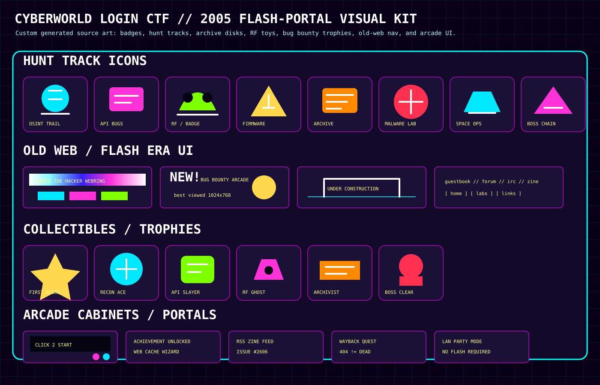

OSINT Wayback Hunt
Archived pages, source comments, robots/sitemap clues, metadata, old route names, and forgotten web-ring links.
Open Intel Desk →
quest select // bug bounty arcade // web archive dig // hardware village
This lab is now a broad enthusiast hunt board. The old five-tier progress model still exists through the classic pages, but the categories are reframed around what players recognize from bug bounty, CTFs, hardware villages, OSINT research, Internet Archive digs, retro game preservation, and space telemetry.
Archived pages, source comments, robots/sitemap clues, metadata, old route names, and forgotten web-ring links.
Open Intel Desk →JWT mistakes, IDOR/BOLA, path traversal, header trust, cache-before-auth, HPP, and race conditions inside toy service-worker APIs.
Open Intercept →Flipper-style protocol recognition, Proxmark-style badge formats, pager telemetry, NFC clue cards, and signal classification without touching real targets.
Open Hardware Lab →Safe firmware archaeology: strings, config paths, entropy, version leaks, update bundle structure, and defensive remediation.
Open Console →2005-era web archaeology: preserved Flash collections, hidden comments, asset names, legacy UI clues, banner ads, and dead-link resurrection.
Visual References →Mars launch packets, sensor sanity checks, GPS-style breadcrumbs, mission log timelines, and payload integrity puzzles.
Mars Campaign →Static triage vocabulary, YARA-like clues, family traits, sandbox reports, and the defensive fix after every identification.
Open Lore Vault →Close the classic five-tier chain: audit, crypto, intel, intercept, and deeper cache/auth bugs. Then return to CyberWorld as an operator.
Open Tier 5 →This sheet is custom repo-native SVG art: no hotlinking, no Flash runtime, no mystery licensing.